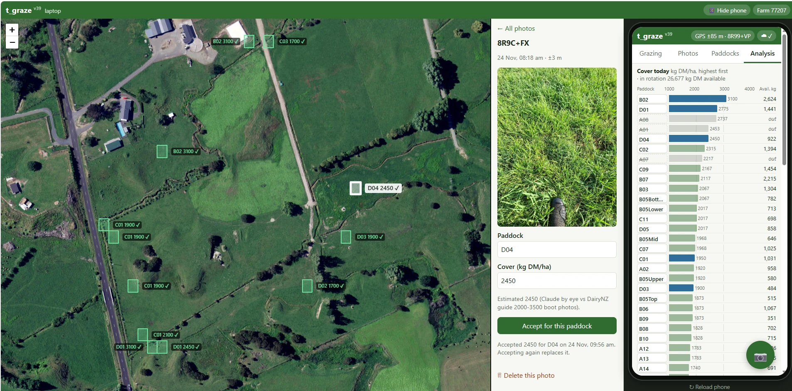
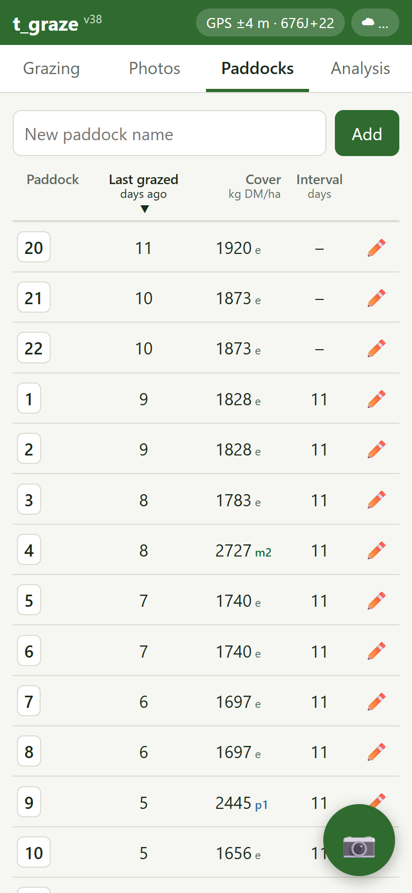
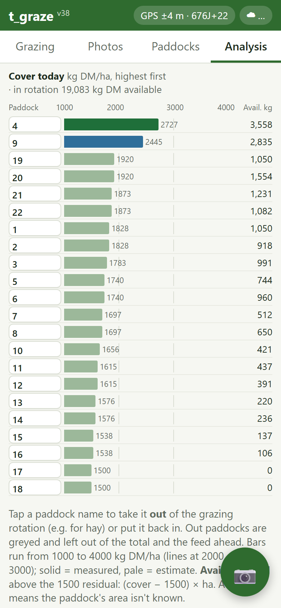
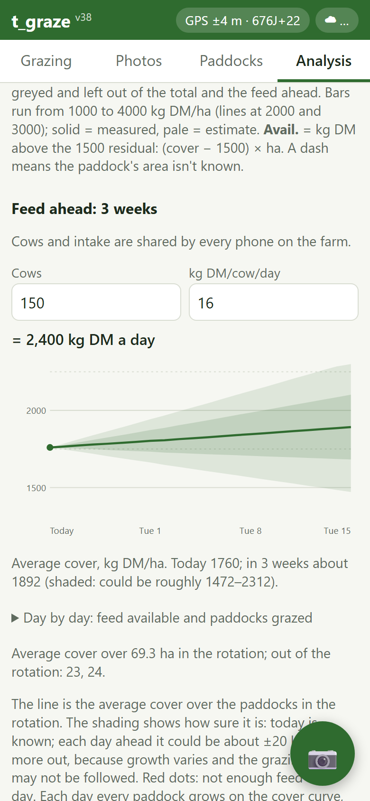

Know your grass from your back pocket.
t_graze is a simple grazing app for dairy farms. Note where the cows went each half-day, see every paddock's cover at a glance, and look three weeks ahead to see if the feed will hold up. No passwords, no fuss.
Get started $2 per grazed hectare a year + GST. A 150 ha platform is $300 + GST.Your data: please read this first
Before anything else, here's exactly what happens to your farm's information.
- It's your data.
- Your grazing records, covers and photos belong to your farm. We keep them so the app works, and for nothing else.
- What we keep
- Your grazing log (which paddock, which half-day), paddock names and areas, cover readings, herd size and intake, and the names and emails of people whose phones you approve. Photos are kept as a small copy with the time and GPS position, and only for three days. See below.
- Where it lives
- In a database run by Supabase, in Sydney, Australia. Everything travels to and from it encrypted (https).
- Who can see it
- Only the phones and laptops you approve for your farm. The database itself walls each farm off from every other farm. Tamaki Control (that's us) can see it to run the service and help when you ask.
- Photos go after three days
- The full-size photo stays on your phone. A small copy (about 0.5 MB) goes up so you can check covers on the laptop, and it's deleted automatically three days after it's taken. The cover readings you accept from photos are kept.
- No passwords
- Each phone shows a code. You send it to us, we approve it for your farm, and it's in. If a phone is lost or someone leaves, we take it off your farm and it can't see anything any more.
- We don't sell it, and we only share it with your consent
- Your data is never sold. With your consent, we'll share it with DairyNZ so they can use it in their work improving dairying in New Zealand. We'll ask you first, it's your choice, and you can change your mind at any time. Apart from that, it isn't given to anyone (your dairy company, bank, council or anyone else) unless you ask us to.
- You can take it with you
- The app exports your grazing log and photo list as spreadsheet files (CSV) whenever you like. If you stop subscribing, we delete your farm's data within 30 days. Export it first if you want to keep it.
What it looks like

On the phone



What it does
- Grazing log by half-dayPick the paddock for each morning and afternoon. Two paddocks at once is fine.
- Covers that keep upAn estimate grows each day after grazing. Type in a measured cover and that takes over.
- Standard paddock photosThe camera guides you: phone at belt height, toe in the shot, tilt meter turns green.
- Laptop mapEach photo on an aerial map. Click it, say which paddock, accept or change the cover.
- Paddocks in and outTake paddocks out for hay or silage and the forecast leaves them alone.
- Works with no signalEverything saves on the phone and uploads when you're back in coverage.
Getting started
- Email t_graze@tamakicontrol.com with your farm ID (for example your Fonterra supplier number) and your grazed area in hectares.
- We set your farm up and send you the link.
- Open it on each phone, add it to the home screen, and send us the code it shows. We approve it and you're away.
$2 per grazed hectare a year + GST, paid annually. Works on Android phones (Chrome) and any laptop browser. iPhones haven't been tested yet.